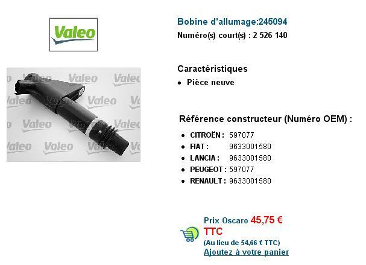
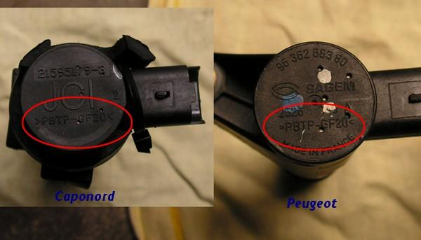
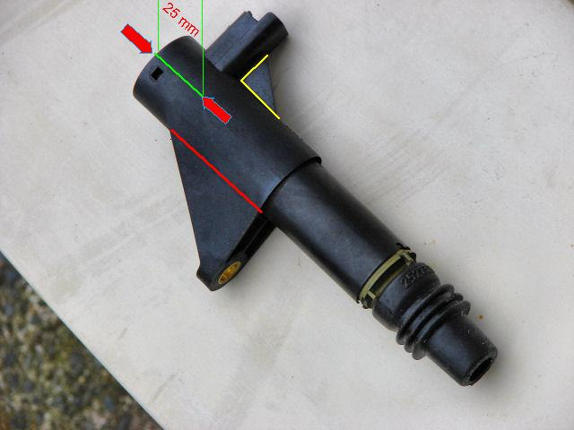
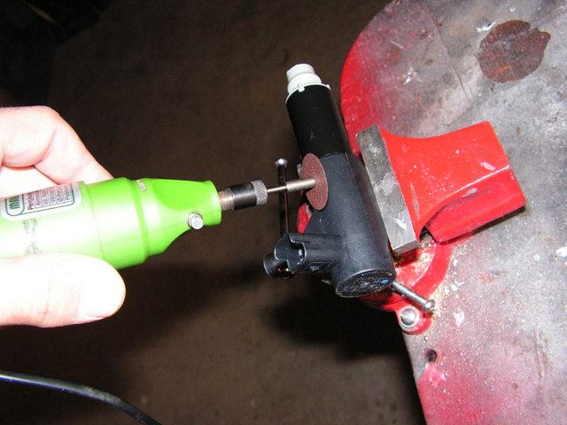
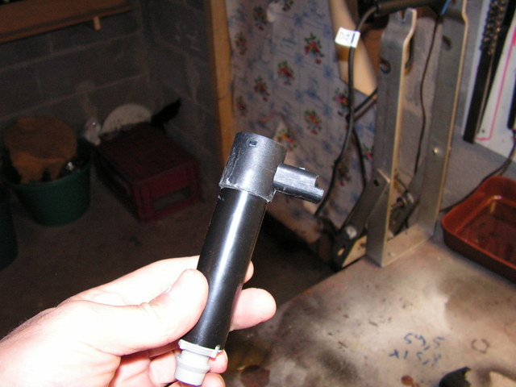
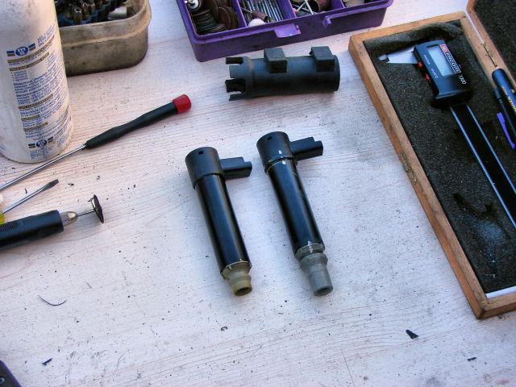

posted by louisifis - Benelliforum - 2007)
I have been digging and digging and then dug some more. It seems Benelli owners aren't the only ones suffering from burnt/shorted coils. Wherever and whatever they are fitted on, suffer from coil problems!!!
Now this is a diverse coil which was originally made by Sagem, which was taken over from Johson Controls International (JCI) which has now been engulfed by Valeo!!!
It is fitted to Alfa's, Fiat's, Lancia's, Renault's, Citroen's, Peugeot's( on their respective 3L V6's) and Aprilia's.
All the info I have has come from the Aprilia forum, which I have cross checked with the manufacturers (Valeo) and the carmakers websites.
Prices for the coils varied from A$330 Benelli and 6 week wait, A$185 Renault in stock, A$93 Citroen in stock and A$85 Peugeot in stock. It goes without saying, that afternoon I was knocking on my local Peugeot Dealers door(Melbourne City Peugeot) and bought 3 over the counter. With very little modification and about half an hour later, I had 3 brand new coils ready to fit to my Tornado! For modification/info details see
http://gtog.free.fr/forum/viewtopic.php?t=1313 and
http://gtog.free.fr/forum/viewtopic....338e fd7f1a2b
andhttp://www.apriliaforum.com/forums/s...highlight=coil
This explanation is in French (it was, until I translated it using Google Translate & Freetranslation.com . I also removed the references to work not required for our Tornados - Ed.), but the pictures are that good, it is easy enough to follow. The other plus is that the high tension end which attaches to the plug is identical and does not require modification for fitment to the Benelli. The only thing you have to do is cut the end cap. I carefully used a hacksaw blade, and sealed the cap with silicon. I also sprayed a hard drying anti corrosive film over it, for obvious reasons. The result is an identical coil!!!
The primary and secondary coil specs seem spot on as well. An Aprillia member quotes over 10,000 km without a problem.
Ed. - dusteryabwny - Benelliforum - (25Oct07) "bought coils from peugeot/citroen ,they are for any 3ltr
v6 circa 2002,the manufacturer is sagem,the model number is pbtp-gf20,
(¿ See below ? )
the peugeot ref number is 597077"
(The new Peugeot / Ctiroen part number is 597094)
Operation:
Replacement coils of ignition of the motorcycle equivalent by equipping cars.
PRELIMINARY INFORMATION : This is a collaborative work. Brittany & Eliso having worked on their own, on a number of
different solutions on the adaptation of coils. They arrived at the same conclusions, representing the best
compromise. PROCEDURE : REMARKS: Model VALEO Coils are in stock at AF1 Get yer coils here, boys! (And gals... if there are any here, that is.)
Purpose:
To avoid an extended stop following a coil failure if they do not supply spare parts by the VAS Aprilia.
Keep a coil under the seat of in case of breakdowns.
Models :
All the Capo N.
Approximate cost:
About 60 € ?
Difficulty level: Fairly easy.
Materials needed :
- 1 to 4 coils: Brand VALEO

Their two bikes were equipped with modified coils that functioning perfectly, after having covered each about 1500 km.
Moreover, the coils have exactly the same electrical characteristics as the originals :

(Ed: Aaron, of the Benelliforum, pointed out that PBTP-GF20 stands for "Poly Butylene Terephthlate
with 20% glass fibre". It has nothing to do with the electrical characteristics of the coil)
On the coil Valeo (??):

- remove the car mount (cut along red line)
- remove the connector brace (marked yellow)
- keep 25 mm of the top (green). Remove the lower part.

The Result :

Valeo to coil; Capo G & N to D (???):

For the Tornado, this is as far as you need to go. The connection to the spark plug cap is the same as
for the car.
Values electrical coils of Capo N
Primary: 0.6 ohms + /-10% (from 0.54 to 0.66)
Secondary or HT: 10 KOhms + /-10% (from 9 to 11)
Electrical values of the Valeo coil measured on seven coils:
Primary: 0.6 to 0.7Ohms.
Secondary: 9.91 to 9.98KOhms.
To measure the values of the secondary, it is not possible to do it as explained in the workshop manual.
To know that the diode is operating, it is necessary to withdraw the top of the spool, and touch one Ohm
meter lead to diode upstream, & touch the other on the central point of the coil (HT side)
Gauges in 20K.
++++++++++++++++++++++++++++++++++++++++++++++++++++++++++++++++++++
Reference Number 245094
Designation Ignition Coil
EAN 3276422 45094 6
Commercial Reference 2526 140
Réf-constructeur
Model Numbers
CITROËN 597077
FIAT 9633001580
LANCIA 9633001580
PEUGEOT 597077
RENAUL T 9633001580
sedan vehicles
Description Year KW CH Cem Model Config. T
CITRO C5 3.0 V6 (DCXFXC, DCXFXF) 03.01 152 207 2946 3/5 portes
CITRO C5 3.0 V6 (RCXFUF) 09.04 152 207 2946 3/5 portes
CITRO C5 Break 3.0 V6 (DEXFXC, DEXFXF) 06.01 152 207 2946 Break
CITRO C5 Break 3.0 V6 (REXFUF) 09.04 152 207 2946 Break
CITRO C8 3.0 V6 07.02 150 204 2946 Monospaee
FIATULYSSE(179AX)3.0V6 08.02 150 204 2946 Monospaee
LANCIPHEDRA (179) 3.0 V6 09.02 150 204 2946 Monospaee
PEUGE 406 (8B)3.0 V6 03.00 -05.04 152 207 2946 A trois volumes
PEUGE 406 Break
(8E/F) 3.0 V6 03.00 152 207 2946 Break
PEUGE 406 Coupé(8C) 3.0 V6 03.00 152 207 2946 Coupé
PEUGE 4073.0 05.04 155 211 2946 A trois volumes
PEUGE 407Coupé 3.0 V6 10.05
155 211 2946 Coupé
PEUGE 407 SW 3.0 05.04 155 211 2946 Break
PEUGE 607 (90, 9U) 3.0 V6 24V 02.00 152 207 2946 A trois volumes
PEUGE 807 (E) 3.0 V6 06.02 150 204 2946 Monospaee
RENAU
AVANTIME (DEO_)3.0 V6 (DE04, 09.01 -05.03 152 207 2946 Monospaee
DEOT)
RENAU CLIO Il (BBO/1/2_,CBO/1/2_)3.0 V6 12.02 187 254
2946 3/5 portes
Sport (CB1H, CB2S)
RENAU LAGUNA Il
(BGO/1_)3.0 V6 24V 03.01 152 207 2946 3/5 portes
(BGOD)
http://www.af1racing.com/store/Scrip...idproduct=2484
CIT077 IGNITION COIL 3.0 PETROL (6 PER CAR) £18.39 9 Nov 7